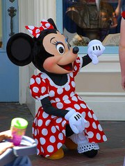

- Anagrafica Disney
nome - foto
Diritto di utilizzo
Alcune immagini sono protette da copyright. Si ritiene che esse possano essere qui riprodotte, in osservanza alla legge sulla Protezione del diritto d'autore, articolo 70 comma 1 della legge n. 633 del 22 aprile 1941 e successive modificazioni, poichè trattasi di citazione per mere finalità illustrative ed a fini non commerciali.
Paolino Paperino
Donald Duck
da The Spirit of '43
Minnie
Minnie Mouse

Foto rilasciata nel pubblico dominio dall'autore Jon Sullivan.
topolino
Mickey Mouse
Fantasia (1940)
riedito in blueray
- Autori
bruno.trombi AT gmail DOT com
fulvio.mariola AT gmail DOT com
mantonini70 AT gmail DOT com
zagranowsi AT gmail DOT com
mar_sansone1 AT gmail DOT com
luca.bonifanti AT gmail DOT com
paolomind AT gmail DOT com
eleonora.martinali AT gmail DOT com
cozzolino.giorgio AT gmail DOT com